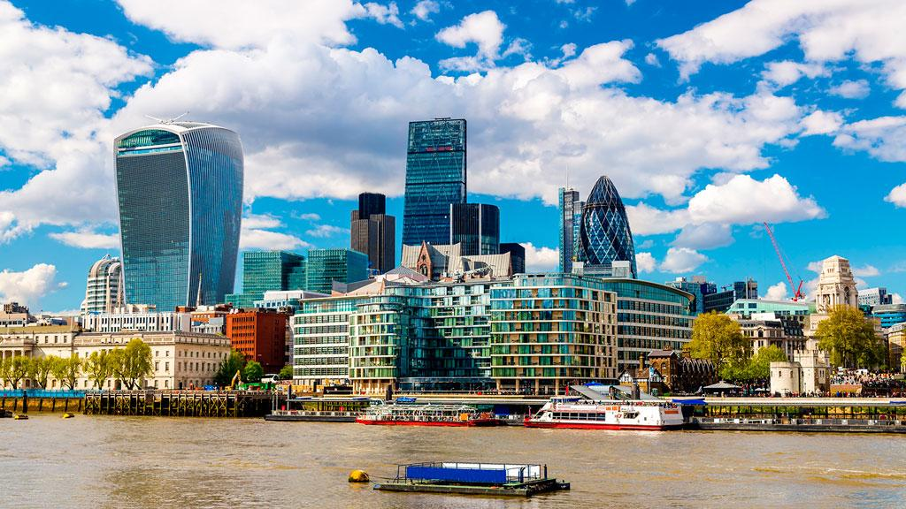
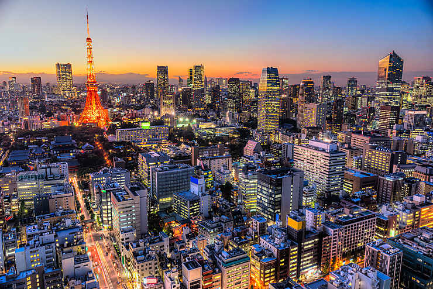
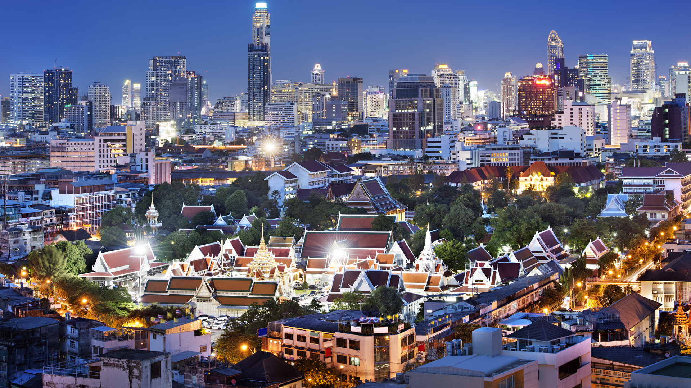
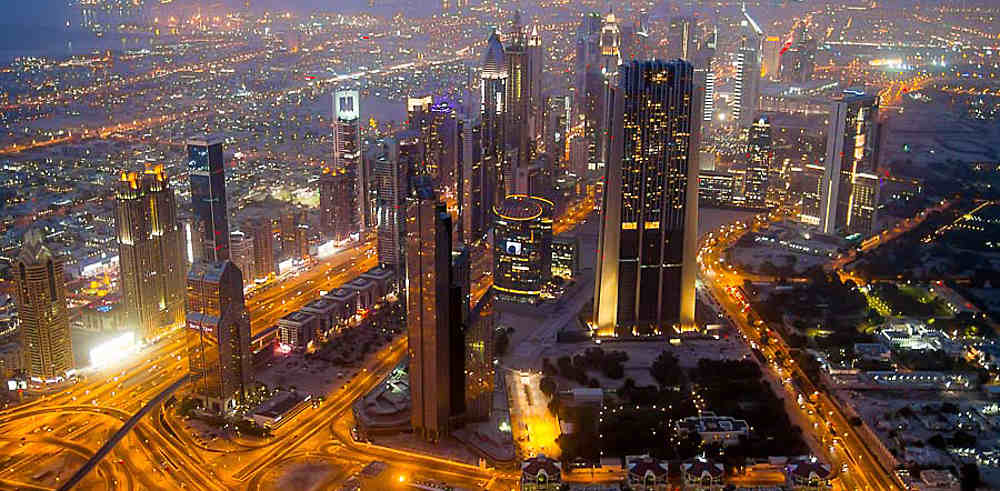
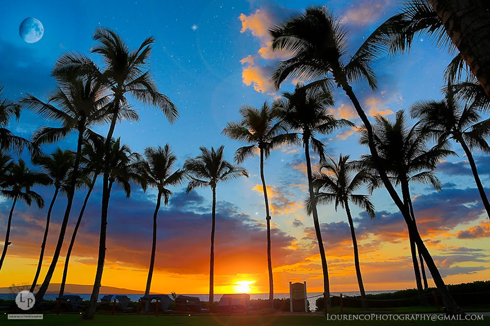

Londres (prononcé [lɔ̃dʁ] ; en anglais London [ˈlʌn.dən]), située dans le Sud-Est de la Grande-Bretagne, est la capitale
et la plus grande ville de l'Angleterre et du Royaume-Uni. Longtemps capitale de l'Empire britannique, elle est
désormais le siège du Commonwealth of Nations. Fondée il y a presque 2 000 ans par les Romains sous le nom de
Londinium, Londres était au XIXe siècle la ville la plus peuplée du monde. Bien que largement dépassée dans ce
domaine par de nombreuses mégapoles, elle reste une métropole de tout premier plan2, en raison de son rayonnement
et de sa puissance économique, dû notamment à sa place de premier centre financier mondial3. Londres se place
dans le rang des grands centres financiers et culturels du monde avec New York et Hong Kong, cette trilogie est
appelée par les médias anglophones « Nylonkong ».

Paris
Paris (prononcé [pa.ʁi]) est la capitale de la France. Elle se situe au cœur d'un vaste bassin sédimentaire aux sols
fertiles et au climat tempéré, le bassin parisien, sur une boucle de la Seine, entre les confluents de celle-ci
avec la Marne et l'Oise. Ses habitants s’appellent les Parisiens. Paris est également le chef-lieu de la région
Île-de-France et l'unique commune française qui est en même temps un département. Commune centrale de la Métropole
du Grand Paris, créée en 2016, elle est divisée en arrondissements, comme les villes de Lyon et de Marseille,
au nombre de vingt. L’État y dispose de prérogatives particulières exercées par le préfet de police de Paris.
Ville la plus peuplée de France, elle est quatrième parmi les aires urbaines européennes derrière Moscou, Istanbul
et Londres et la 29e plus peuplée du monde. Paris compte 2,21 millions d'habitants au 1er janvier 2015. L'agglomération
parisienne s’est largement développée au cours du XXe siècle, rassemblant 10,71 millions d'habitants au 1er janvier
2015, et son aire urbaine (l'agglomération et la couronne périurbaine) comptait 12,53 millions d'habitants.
Tokyo
Tokyo (東京, Tōkyō?, littéralement « Capitale de l'est »), anciennement Edo (江戸?), officiellement la préfecture métropolitaine
de Tokyo (東京都, Tōkyō-to?), est la capitale du Japon. Elle est la plus grande ville du Japon, avec plus de 13
622 267 habitants intra-muros en 2016 et 42 794 714 dans l'agglomération2, et forme l'aire urbaine la plus peuplée
au monde. Située sur la côte est de l'île principale de l'archipel japonais, Honshū, Tokyo est l'une des quarante-sept
préfectures du Japon. Principal centre politique de l'archipel depuis le XVIIe siècle, la ville accueille la
plupart des institutions du pays : la résidence de l'empereur du Japon, du Premier ministre, le siège de la Diète
(le parlement japonais), du Cabinet, les ministères qui le constituent ainsi que toutes les ambassades étrangères.

Bangkok
Bangkok (en thaï กรุงเทพมหานคร ou กรุงเทพฯ Krungthep) est la capitale de la Thaïlande. C'est à la fois une ville et une province.
La ville occupe une superficie de 1 569 km2 dans le delta du fleuve Chao Phraya en Thaïlande centrale et son nombre d’habitants
est supérieur à 9 millions, plus de 19 millions de personnes habitent l’aire métropolitaine de la capitale,
soit plusieurs fois plus que tous les autres centres urbains du pays.
Les racines de Bangkok remontent à un petit comptoir commercial crée durant le Royaume d'Ayutthaya au XVe siècle
qui prend de l’importance avant de devenir le site d'une première capitale, Thonburi, en 1768.
Mais la date officielle de sa fondation par Rama Ier, premier roi la dynastie Chakri, est le 6 avril 1782, sur l'autre rive du fleuve.
Bangkok s’inscrit au XIXe siècle au cœur du mouvement de modernisation du royaume de Siam,
alors que le pays subit la pression des nations colonisatrices européennes.
La ville est ensuite au XXe siècle le théâtre de l’évolution politique de la Thaïlande, notamment avec l’abolition de la monarchie absolue,
l’adoption d’une constitution, et plusieurs soubresauts politiques parfois violents.
La ville a connu une formidable croissance à partir des années 1960 et exerce aujourd’hui une influence centrale sur la vie politique,
économique, culturelle, universitaire et médiatique de la Thaïlande.

Dubaï
Dubaï ou Doubaï est la première ville des Émirats arabes unis (devant la capitale fédérale Abou Dabi).
Située sur le golfe Persique, elle est capitale de l'émirat de Dubaï, et compte plus d'un million d'habitants
(cependant, avec les villes de Charjah, Ajman et Oumm al Qaïwaïn, elles-mêmes capitales de leurs émirats respectifs,
elle forme une agglomération qui dépasse 3 millions d'habitants en 2018[Lien à corriger]). Dubaï est également le premier port du pays.
Fondée au XVIIIe siècle, Dubaï reste un bourg modeste et isolé du monde qui vit essentiellement de la pêche aux perles à la fin du XIXe siècle.
À cette époque, tout comme l'émirat qui l'entoure, ils prennent de l'importance en participant à la création des États de la Trêve
(Trucial States en anglais) en 1853.
Vivant une période difficile pendant l'entre-deux-guerres, avant d'entrer de plein fouet dans la modernité dans la deuxième partie du XXe siècle,
Dubaï participe à la création des Émirats arabes unis actuels en 1971 dont l'émir assure la vice-présidence.

Oahu
Oahu, en hawaïen Oʻahu, est la troisième île par la taille de l’archipel d'Hawaï et la plus peuplée des îles formant l’État d'Hawaï.
Elle couvre une superficie de 1 545,34 km2, en incluant l’île de Ford et les îlots de la baie de Kaneohe et de la côte est.
Elle a 336 kilomètres de côtes1.
L’île s’est formée sous l’action conjointe des volcans Wai’anae et Ko’olau, laissant une grande vallée entre les deux.
Le plus haut sommet est le mont Ka’ala qui culmine à 1 225 mètres au-dessus du niveau de la mer.
L’île est la résidence de près d'un million de personnes, soit environ 75 % de la population de l’État d'Hawaï.
En partie à cause de cela, O’ahu a été surnommée « The Gathering Place » (« le point de rassemblement »).
La capitale de l'État d'Hawaï, Honolulu, est située sur la côte sud de l'île, tout comme le port Pearl Harbor,
dont l'attaque par le Japon le 7 décembre 1941, provoqua l'entrée en guerre des États-Unis durant la Seconde Guerre mondiale.

Stockholm
Stockholm [stɔkːɔlm] est la capitale et la plus grande ville de la Suède.
Elle est le siège du gouvernement et du Parlement suédois ainsi que le lieu de résidence officielle du roi Carl XVI Gustav.
La ville de Stockholm (Stockholms stad) ou, plus officiellement, la commune de Stockholm (Stockholms kommun) est,
avec ses 1 538 517 habitants1, la plus grande des 290 municipalités suédoises.
Le Grand Stockholm c'est-à-dire le Comté de Stockholm a, lui, une population de 2 063 945 habitants1 — sur une superficie de près de 6 600 km2.
Située au bord de la mer Baltique, la ville est construite en partie sur plusieurs îles, à l'embouchure du lac Mälar, ce qui lui a valu,
à l'instar d'autres cités européennes, son surnom de Venise du Nord (par ailleurs aussi donné à Bruges (Belgique),
à Saint-Pétersbourg (Russie), et à Amsterdam (Pays-Bas)).